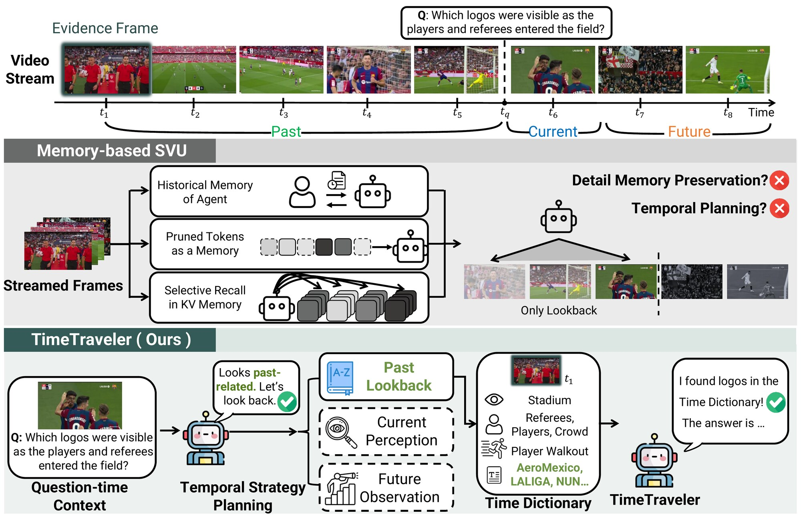
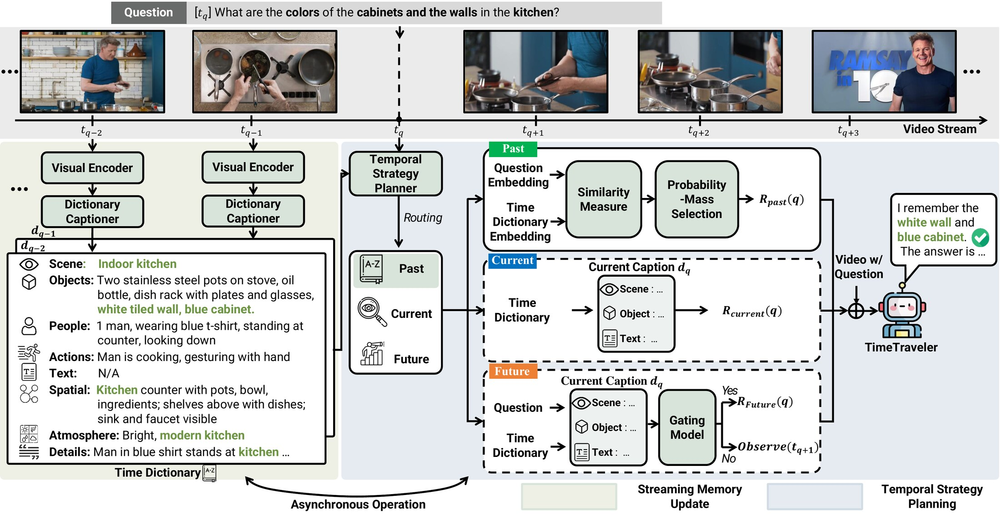
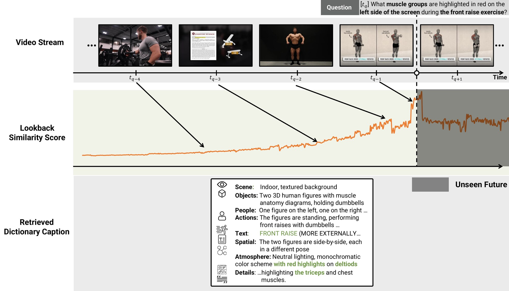

Overview
In a live video stream, a question can arrive at any moment, and its answer may sit in the past, in the current scene, or in something that has not happened yet, in the future. Memory-based streaming models keep history as compressed visual tokens or KV caches, which tends to blur small text, object attributes, and spatial relations. They also reach that memory the same way for every question.
TimeTraveler handles both sides with two pieces:
- Record. Every second, a small frozen captioner writes the frame into the Time Dictionary: a timestamped entry with eight fields, from scene and objects to on-screen text and spatial layout. A logo or a color seen once is still readable later.
- Plan. When a question arrives, the Temporal Strategy Planner decides where its evidence lives: in the past, in the current scene, or in the future.
- Acquire and answer. Each strategy gathers evidence its own way, and a frozen MLLM answers once.
Nothing is trained. On OVO-Bench and StreamingBench, TimeTraveler improves both Qwen3-VL-8B and InternVL3.5-8B and reaches the best overall score among open-source models.

See it in action
Three questions from the paper, each asked mid-stream. Frames after the question are not available yet. Pick a case to see which moment the planner reaches for and what the Time Dictionary kept from it.
Method
TimeTraveler separates what to keep from the stream from how to reach it. Recording runs continuously; a question triggers planning, evidence gathering, and a single answer. The two loops run asynchronously, and every model in them is frozen.

The Time Dictionary
One structured entry per second of video. Each field nudges the captioner to write down details that a later question might need.
Captioned at 1 fps by Qwen3-VL-2B (8-bit). A Qwen3-Embedding-0.6B vector per entry is kept for about 10 minutes as a retrieval handle; the caption text is what the answer model reads.
Three ways to gather evidence
Look back
Scores stored captions against the question, penalizes older ones, and keeps the smallest set that covers 70% of the probability mass. Focused evidence gives a short list; diffuse evidence gives a longer one.
Look now
Reads only the caption at question time. Skipping global lookback keeps similar but older events from turning into distractors.
Look ahead
Holds the answer. A lightweight gate checks each new caption against the question, and the answer model runs once: when the gate says yes, or after 30 seconds.
The planner is the same frozen Qwen3-VL-2B, prompted to output one of past, current, or future. Past lookback uses the 32 most similar captions, τr = 150 s, and softmax temperature 0.02.
Results
TimeTraveler reaches the best overall score among open-source models on both benchmarks and lifts both backbones without any training. The gains follow the two design goals: detail-heavy tasks such as OCR and text-rich understanding (TR) benefit from the Time Dictionary, while temporally grounded tasks such as episodic memory (EPM) and proactive output (PO) benefit from planning.
OVO-Bench
| Method | #Frames | Real-Time Visual Perception | Backward Tracing | Forward Active Responding | Overall | ||||||||||||
|---|---|---|---|---|---|---|---|---|---|---|---|---|---|---|---|---|---|
| OCR | ACR | ATR | STU | FPD | OJR | Avg. | EPM | ASI | HLD | Avg. | REC | SSR | CRR | Avg. | |||
| Human | |||||||||||||||||
| Human | – | 93.96 | 92.57 | 94.83 | 92.70 | 91.09 | 94.02 | 93.20 | 92.59 | 93.02 | 91.37 | 92.33 | 95.48 | 89.67 | 93.56 | 92.90 | 92.81 |
| Proprietary Models (Offline) | |||||||||||||||||
| Gemini 1.5 Pro | 1 fps | 85.91 | 66.97 | 79.31 | 58.43 | 63.37 | 61.96 | 69.32 | 58.59 | 76.35 | 52.64 | 62.54 | 35.53 | 74.24 | 61.67 | 57.15 | 63.00 |
| GPT-4o | 64 | 69.80 | 64.22 | 71.55 | 51.12 | 70.30 | 59.78 | 64.46 | 57.91 | 75.68 | 48.66 | 60.75 | 27.58 | 73.21 | 59.40 | 53.40 | 59.54 |
| Open-Source Offline Models | |||||||||||||||||
| LLaVA-Video-7B | 64 | 69.13 | 58.72 | 68.83 | 49.44 | 74.26 | 59.78 | 63.52 | 56.23 | 57.43 | 7.53 | 40.40 | 34.10 | 69.95 | 60.42 | 54.82 | 52.91 |
| LLaVA-OV-7B | 64 | 66.44 | 57.80 | 73.28 | 53.37 | 71.29 | 61.96 | 64.02 | 54.21 | 55.41 | 21.51 | 43.71 | 25.64 | 67.09 | 58.75 | 50.50 | 52.74 |
| LLaVA-N-Video-7B | 64 | 69.80 | 59.60 | 66.40 | 50.60 | 72.30 | 61.40 | 63.30 | 51.20 | 64.20 | 9.70 | 41.70 | 34.10 | 67.60 | 60.80 | 54.20 | 53.10 |
| Qwen2-VL-7B | 64 | 60.40 | 50.46 | 56.03 | 47.19 | 66.34 | 55.43 | 55.98 | 47.81 | 35.48 | 56.08 | 46.46 | 31.66 | 65.82 | 48.75 | 48.74 | 50.39 |
| InternVL-V2-8B | 64 | 67.11 | 60.55 | 63.79 | 46.07 | 68.32 | 56.52 | 60.39 | 48.15 | 57.43 | 24.73 | 43.44 | 26.50 | 59.14 | 54.14 | 46.60 | 50.15 |
| LongVU-7B | 1 fps | 55.70 | 49.50 | 59.50 | 48.30 | 68.30 | 63.00 | 57.40 | 43.10 | 66.20 | 9.10 | 39.50 | 16.60 | 69.00 | 60.00 | 48.50 | 48.50 |
| Open-Source Online Models | |||||||||||||||||
| Flash-VStream-7B | 1 fps | 24.16 | 29.36 | 28.45 | 33.71 | 25.74 | 28.80 | 28.37 | 39.06 | 37.16 | 5.91 | 27.38 | 8.02 | 67.25 | 60.00 | 45.09 | 33.61 |
| VideoLLM-Online-8B | 2 fps | 8.05 | 23.85 | 12.07 | 14.04 | 45.54 | 21.20 | 20.79 | 22.22 | 18.80 | 12.18 | 17.73 | – | – | – | – | – |
| VideoLLM-EyeWO | 1 fps | 24.16 | 27.52 | 31.89 | 32.58 | 44.55 | 35.87 | 32.76 | 39.06 | 38.51 | 6.45 | 28.00 | – | – | – | – | – |
| Dispider-7B | 1 fps | 57.72 | 49.54 | 62.07 | 44.94 | 61.39 | 51.63 | 54.55 | 48.48 | 55.41 | 4.30 | 36.06 | 18.05 | 37.36 | 48.75 | 34.72 | 41.78 |
| TimeChat-Online-7B | 1 fps | 69.80 | 48.60 | 64.70 | 44.90 | 68.30 | 55.40 | 58.60 | 53.90 | 62.80 | 9.10 | 42.00 | 32.50 | 36.50 | 40.00 | 36.40 | 45.60 |
| StreamAgent-7B | 1 fps | 71.20 | 53.20 | 63.60 | 53.90 | 67.30 | 58.70 | 61.30 | 54.80 | 58.10 | 25.80 | 41.70 | 35.90 | 48.40 | 52.00 | 45.40 | 49.40 |
| QueryStream-7B | 1 fps | 74.50 | 47.70 | 70.70 | 46.60 | 71.30 | 57.60 | 61.40 | 54.20 | 63.50 | 8.60 | 42.10 | 33.20 | 43.10 | 40.80 | 39.03 | 47.51 |
| Backbones with TimeTraveler (training-free) | |||||||||||||||||
| InternVL3.5-8B | 1fps | 79.87 | 65.14 | 69.83 | 61.80 | 70.30 | 65.22 | 68.69 | 33.00 | 59.46 | 4.30 | 32.25 | 32.66 | 60.10 | 35.00 | 42.59 | 47.84 |
| + TimeTraveler | 1fps | 91.95 | 70.64 | 75.00 | 61.80 | 75.25 | 77.17 | 75.30+6.61 | 33.67 | 60.81 | 9.68 | 34.72+2.47 | 22.21 | 50.24 | 38.75 | 37.06−5.53 | 49.03+1.19 |
| Qwen3-VL-8B | 1fps | 75.17 | 60.55 | 66.38 | 53.93 | 66.34 | 57.07 | 63.24 | 52.53 | 67.57 | 10.22 | 43.44 | 33.09 | 65.50 | 46.67 | 48.42 | 51.70 |
| + TimeTraveler | 1fps | 87.25 | 73.39 | 76.72 | 59.55 | 68.32 | 74.46 | 73.00+9.76 | 59.26 | 69.59 | 25.27 | 51.66+8.22 | 32.23 | 67.25 | 48.75 | 49.41+0.99 | 58.02+6.32 |
Overall is the macro average over the three categories. Bold and underline mark the best and second best among open-source models, as in the paper. Gray rows are human and proprietary references. +x.xx is the change from the same backbone without TimeTraveler.
StreamingBench
| Model | #Frames | Real-Time Visual Understanding | Omni-Source Understanding | Contextual Understanding | Overall | ||||||||||||||||||
|---|---|---|---|---|---|---|---|---|---|---|---|---|---|---|---|---|---|---|---|---|---|---|---|
| OP | CR | CS | ATP | EU | TR | PR | SU | ACP | CT | All | ER | SCU | SD | MA | All | ACU | MCU | SQA | PO | All | |||
| Human | |||||||||||||||||||||||
| Human‡ | – | 89.47 | 92.00 | 93.60 | 91.47 | 95.65 | 92.52 | 88.00 | 88.75 | 89.74 | 91.30 | 91.46 | 88.00 | 88.24 | 93.60 | 90.27 | 90.26 | 88.80 | 90.40 | 95.00 | 100.00 | 93.55 | 91.66 |
| Proprietary MLLMs | |||||||||||||||||||||||
| Gemini 1.5 pro | 1 fps | 79.02 | 80.47 | 83.54 | 79.67 | 80.00 | 84.74 | 77.78 | 64.23 | 71.95 | 48.70 | 75.69 | 46.80 | 39.60 | 74.90 | 80.00 | 60.22 | 51.41 | 40.73 | 54.80 | 45.10 | 48.73 | 67.07 |
| GPT-4o | 64 | 77.11 | 80.47 | 83.91 | 76.47 | 70.19 | 83.80 | 66.67 | 62.19 | 69.12 | 49.22 | 73.28 | 41.20 | 37.20 | 43.60 | 56.00 | 44.50 | 41.20 | 38.40 | 32.80 | 56.86 | 38.70 | 60.15 |
| Claude 3.5 Sonnet | 20 | 80.49 | 77.34 | 82.02 | 81.73 | 72.33 | 75.39 | 61.11 | 61.79 | 69.32 | 43.09 | 72.44 | 31.60 | 34.00 | 32.80 | 48.80 | 36.80 | 38.40 | 34.80 | 34.40 | 64.71 | 37.70 | 57.68 |
| Open-Source Offline Video MLLMs | |||||||||||||||||||||||
| LLaVA-OV-7B | 32 | 80.38 | 74.22 | 76.03 | 80.72 | 72.67 | 71.65 | 67.59 | 65.45 | 65.72 | 45.08 | 71.12 | 40.80 | 37.20 | 33.60 | 44.80 | 38.40 | 35.60 | 36.00 | 27.27 | 29.55 | 32.74 | 56.36 |
| Qwen2-VL-7B | 0.2–1 fps† | 75.20 | 82.81 | 73.19 | 77.45 | 68.32 | 71.03 | 72.22 | 61.19 | 61.47 | 46.11 | 69.04 | 41.20 | 22.00 | 32.80 | 43.60 | 34.90 | 31.20 | 26.00 | 39.60 | 22.73 | 31.66 | 54.14 |
| MiniCPM-V 2.6-8B | 32 | 71.93 | 71.09 | 77.92 | 75.82 | 64.60 | 65.73 | 70.37 | 56.10 | 62.32 | 53.37 | 67.44 | 40.80 | 24.00 | 34.00 | 41.20 | 35.00 | 34.00 | 31.60 | 41.92 | 22.22 | 34.97 | 53.85 |
| InternVL-V2-8B | 16 | 68.12 | 60.94 | 69.40 | 77.12 | 67.70 | 62.93 | 59.26 | 53.25 | 54.96 | 56.48 | 63.72 | 37.60 | 26.40 | 37.20 | 42.00 | 35.80 | 32.00 | 31.20 | 32.32 | 40.91 | 32.42 | 51.40 |
| Kangaroo-7B | 64 | 71.12 | 84.38 | 70.66 | 73.20 | 67.08 | 61.68 | 56.48 | 55.69 | 62.04 | 38.86 | 64.60 | 37.60 | 31.20 | 28.80 | 39.20 | 34.20 | 32.80 | 26.40 | 33.84 | 16.00 | 30.06 | 51.10 |
| LongVA-7B | 128 | 70.03 | 63.28 | 61.20 | 70.92 | 62.73 | 59.50 | 61.11 | 53.66 | 54.67 | 34.72 | 59.96 | 39.60 | 32.40 | 28.00 | 41.60 | 35.40 | 32.80 | 29.60 | 30.30 | 15.91 | 29.95 | 48.66 |
| VILA-1.5-8B | 14 | 53.68 | 49.22 | 70.98 | 56.86 | 53.42 | 53.89 | 54.63 | 48.78 | 50.14 | 17.62 | 52.32 | 41.60 | 26.40 | 28.40 | 36.00 | 33.10 | 26.80 | 34.00 | 23.23 | 17.65 | 27.35 | 43.20 |
| Video-CCAM-14B | 96 | 56.40 | 57.81 | 65.30 | 62.75 | 64.60 | 51.40 | 42.59 | 47.97 | 49.58 | 31.61 | 53.96 | 33.60 | 22.00 | 28.40 | 34.80 | 29.70 | 27.60 | 24.40 | 16.67 | 22.73 | 22.88 | 42.53 |
| Video-LLaMA2-7B | 32 | 55.86 | 55.47 | 57.41 | 58.17 | 52.80 | 43.61 | 39.81 | 42.68 | 45.61 | 35.23 | 49.52 | 30.40 | 32.40 | 30.40 | 36.00 | 32.40 | 24.80 | 26.80 | 18.67 | 0.00 | 21.93 | 40.40 |
| Open-Source Online Video MLLMs | |||||||||||||||||||||||
| Flash-VStream-7B | – | 25.89 | 43.57 | 24.91 | 23.87 | 27.33 | 13.08 | 18.52 | 25.20 | 23.87 | 48.70 | 23.23 | 25.91 | 24.90 | 25.60 | 28.40 | 26.00 | 24.80 | 25.20 | 26.80 | 1.96 | 24.12 | 24.04 |
| VideoLLM-online-8B | 2 fps | 39.07 | 40.06 | 34.49 | 31.05 | 45.96 | 32.40 | 31.48 | 34.16 | 42.49 | 27.89 | 35.99 | 31.20 | 26.51 | 24.10 | 32.00 | 28.45 | 24.19 | 29.20 | 30.80 | 3.92 | 26.55 | 32.48 |
| Dispider-7B | 1 fps | 74.92 | 75.53 | 74.10 | 73.08 | 74.44 | 59.92 | 76.14 | 62.91 | 62.16 | 45.80 | 67.63 | 35.46 | 25.26 | 38.57 | 43.34 | 35.66 | 39.62 | 27.65 | 34.80 | 25.34 | 33.61 | 53.12 |
| TimeChat-Online-7B | 1 fps | 80.22 | 82.03 | 79.50 | 83.33 | 76.10 | 78.50 | 78.70 | 64.63 | 69.60 | 57.98 | 75.36 | – | – | – | – | – | – | – | – | – | – | – |
| QueryStream-7B | 1 fps | 82.38 | 84.38 | 79.18 | 82.37 | 77.99 | 81.31 | 78.70 | 65.04 | 69.32 | 47.34 | 75.32 | – | – | – | – | – | – | – | – | – | – | – |
| Backbones with TimeTraveler (training-free) | |||||||||||||||||||||||
| InternVL3.5-8B | 1fps | 78.86 | 82.81 | 85.17 | 81.41 | 77.99 | 79.75 | 83.33 | 70.73 | 76.99 | 55.32 | 77.60 | 40.40 | 30.80 | 42.80 | 53.60 | 41.90 | 42.40 | 36.40 | 48.40 | 40.00 | 41.80 | 61.71 |
| + TimeTraveler | 1fps | 82.11 | 82.81 | 89.27 | 84.62 | 83.65 | 87.54 | 87.04 | 73.17 | 77.56 | 53.72 | 80.72+3.12 | 48.40 | 34.40 | 48.00 | 51.20 | 45.50+3.60 | 47.60 | 44.80 | 46.80 | 53.23 | 48.10+6.30 | 65.64+3.93 |
| Qwen3-VL-8B | 1fps | 75.10 | 76.60 | 80.10 | 81.10 | 77.40 | 71.70 | 77.80 | 61.40 | 69.30 | 55.90 | 72.80 | 41.20 | 32.00 | 46.80 | 55.20 | 43.80 | 40.00 | 31.60 | 34.40 | 52.40 | 36.75 | 59.33 |
| + TimeTraveler | 1fps | 81.84 | 79.69 | 87.70 | 85.58 | 76.73 | 90.97 | 87.96 | 69.11 | 75.28 | 59.04 | 80.16+7.36 | 43.20 | 26.40 | 44.00 | 49.20 | 40.70−3.10 | 44.40 | 41.60 | 48.00 | 62.90 | 49.20+12.45 | 64.51+5.18 |
Bold and underline mark the best and second best among open-source models, as in the paper. Gray rows are human and proprietary references. +x.xx is the change from the same backbone without TimeTraveler.
Why it works
Each piece earns its place. All numbers below use Qwen3-VL-8B as the answer model unless noted.
Structured text keeps the details
At a similar memory budget, the structured dictionary beats visual prototypes by 4.12 and flat captions by 2.23 on OVO-Bench overall.
| Memory | Tokens | Real-time | Backward | Forward | Overall |
|---|---|---|---|---|---|
| No memory | – | 63.24 | 43.44 | 48.42 | 51.70 |
| Visual prototypes | 203.11 | 66.19 | 44.16 | 51.36 | 53.90 |
| Flat text | 236.60 | 70.98 | 48.57 | 47.83 | 55.79 |
| Time Dictionary | 245.23 | 73.00 | 51.66 | 49.41 | 58.02 |
Planning beats always looking back
Even on Backward Tracing, sending every question to the past (50.71) or routing at random (50.28) trails the planner (51.66). Some backward questions still need the current scene.
| Setting | EPM | HLD | ASI | Avg. |
|---|---|---|---|---|
| No memory | 52.53 | 10.22 | 67.57 | 43.44 |
| All to past | 57.91 | 25.81 | 67.57 | 50.71 |
| Random routing | 57.94 | 25.13 | 66.52 | 50.28 |
| Our planner | 59.26 | 25.27 | 69.59 | 51.66 |
A small gate decides when to speak
Letting the 8B answer model decide when to respond hurts Qwen3-VL (52.40 → 45.20). A 2B gate that sees only the current caption and the question lifts it to 62.90.
| Setting | Qwen3-VL-8B | InternVL3.5-8B |
|---|---|---|
| Baseline | 52.40 | 40.00 |
| + Time Dictionary, no gate | 45.20 | 41.20 |
| + Time Dictionary, with gate | 62.90 | 53.23 |
The answers really use the captions
Swap a share ρ of the captions for ones from unrelated videos and accuracy falls steadily, ending at 50.27, below the no-memory baseline.
Real time, with little extra wait
Recording costs 637.51 ms per second of video, inside the real-time budget. A question then takes 557.62 to 578.25 ms, only 10 to 31 ms more than a visual-only answer.
Lookback, step by step

BibTeX
The BibTeX entry will be added once the NeurIPS 2026 proceedings are published.